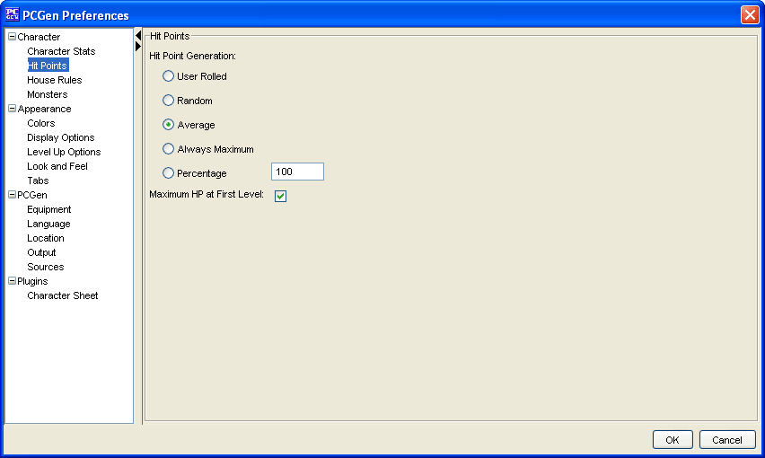

The Hit points menu option allows the user to customize which method to use when the PC is created to determine how Hit Points are allocated.
The User Rolled option is the default that PCGen uses, this means that the users must enter their Hit Points Manually using the HP button found on either the Summary Tab or the Classes tab.
The Random option will present a random hitpoint total between 1 and the hit die type of the class/race when a class level is added. The user can modify this total if desired.
The Average option will always give the average hit points as defined by the hit die type of the class/race.
The Always maximum option will always give the maximum hit points as defined by the hit die type of the class/race.
The Percentage option allows the user to enter a percentage of the maximum hit points as defined by the hit die type of the class/race.
The Average, Rounded Up option will always give the average hit points as defined by the hit die type of the class/race rounded up if the average results in a fraction.
The Max Hp at first level option gives you maximum Hit Points at first level when you are creating your character.
The Do not apply to Racial Hit Dice option modifies the Max Hp at first level option so it only applied to character class levels.